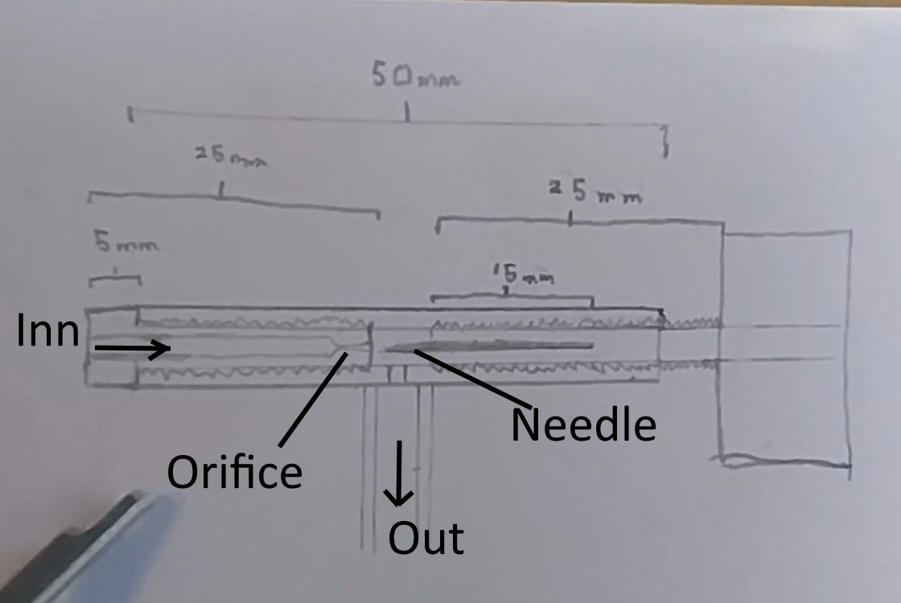

Torch
To make a torch, you first need two needle valves.
You could buy needle valves, but you can also make your own.
Mine were made from copper break-tubing. Tapped to take the needle, and the orifice.
The orifice itself was made from aluminium, and was reamered with a needle tipped with rouge
on the lathe.
The aluminium bolt was then bored from the other side, so that the tip of the drill-bit
ever so sligtly touch the tip of the orifice recess.
The needle was made from M5 threaded rod, that was center drilled and fitted with the needle.
To ensure alignment this was done in the lathe.
The valves where then soldered to the main body of the torch.
A wooden handle was centerdrilled and turned down, and the nozzles where soldered to the U-tube.
Here we can see the torch in action!